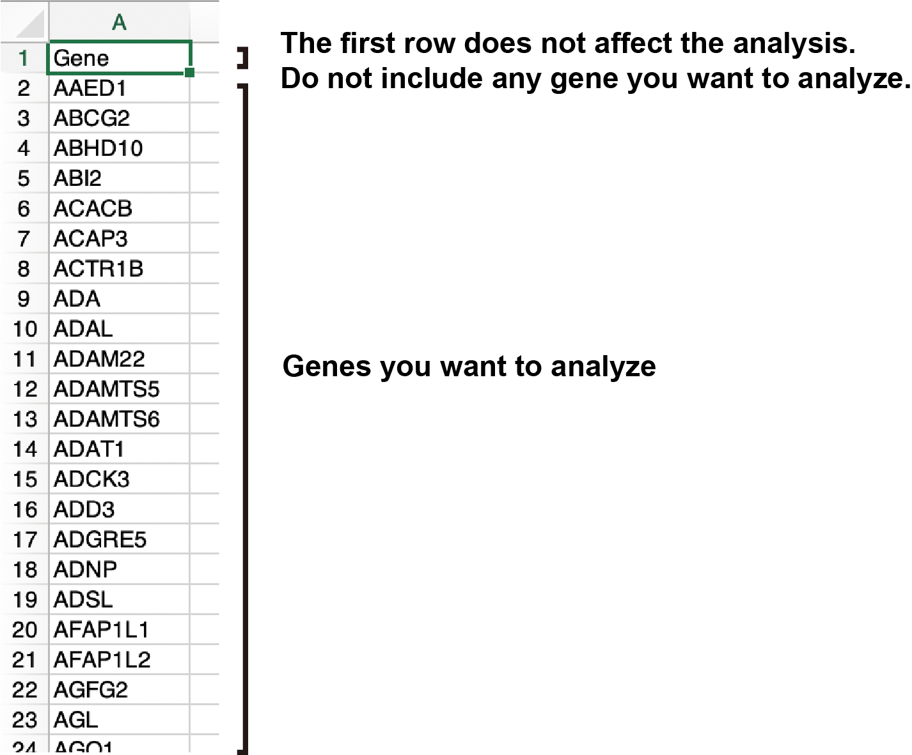

<div class="row">
  <div class="col-sm-12">
    <h2>Log:</h2>
    <h4>v1.0.5 (2023/4/24)</h4>
    <p><strong>&bull; Add 'download summary' buttons in the setting panel for 'Pair-wise DEG', '3 conditions DEG', and 'Multi conditions DEG'.</strong></p>
    <p><strong>&bull; Add new species (Xenopus laevis and Arabidopsis thaliana) for KEGG and GO analysis.</strong></p>
    <p><strong>&bull; Improve the 'start button' for motif analysis in Enrichment viewer.</strong></p>
    <p><strong>&bull; Improve the 'condition' color of the integrated heatmap in Venn diagram.</strong></p>
    <p><strong>&bull; Fix the issue of column name shifting in the output table data. (2023/5/10)</strong></p>
    <p><strong>&bull; Display a warning message when inappropriate data is uploaded in Pair-wise DEG and 3 conditions DEG. (2023/5/11)</strong></p>
    <p><strong>&bull; Display an error message when inappropriate data is uploaded in Pair-wise DEG, 3 conditions DEG, and Multi DEG. (2023/5/18)</strong></p>
    <h4>v1.0.6 (2023/6/7)</h4>
    <p><strong>&bull; Add new function: generating report (.docx) when 'download summary' button is pressed in the setting panel of 'Pair-wise DEG', '3 conditions DEG', and 'Multi conditions DEG'.</strong></p>
    <p><strong>&bull; Fix 'GOI reset' button in the 'Pair-wise DEG', '3 conditions DEG', 'Normalized data count analysis', and 'Volcano navi'.</strong></p>
    <h4>v1.0.7 (2023/7/14)</h4>
    <p><strong>&bull; Add approximately 200 non-model organisms.</strong></p>
    <p><strong>&bull; Add ortholog selection for pathway analysis of non-model organisms.</strong></p>
    <p><strong>&bull; Add export/import of Recode.Rdata in '3 conditions DEG' to skip repeated EBSeq analysis.</strong></p>
    <p><strong>&bull; Add log2FoldChange cut-off and statistical analysis in 'Normalized count analysis'.</strong></p>
    <p><strong>&bull; Bug fix for pathway analysis of non-model organisms.</strong></p>
    <p><strong>&bull; Adjust Excel import when column names contain hyphens. (2023/7/19)</strong></p>
    <h4>v1.0.8 (2023/8/1)</h4>
    <p><strong>&bull; Fix significant bug in EdgeR FDR control for 'Qvalue' and 'IHW'.</strong></p>
    <p><strong>&bull; Add new species (117 plants, 70 fungi, and 251 metazoa).</strong></p>
    <p><strong>&bull; Fix EdgeR bug in Docker ARM build.</strong></p>
    <p><strong>&bull; Improve the Venn diagram input format instructions.</strong></p>
    <p></p>
    <p><strong>&bull; Improve GOI profiling in Pair-wise DEG, 3 conditions DEG, and volcano navi. Box selection on volcano/scatter plots can now select genes.</strong></p>
    <p></p>
    <p><strong>&bull; Fix bug in pair-wise batch mode. (2023/8/4)</strong></p>
    <p><strong>&bull; Add 'Select samples' function in Pair-wise DEG, 3 conditions DEG, and Normalized count analysis. (2023/8/8)</strong></p>
    <p><strong>&bull; Add MA plot in GOI profiling of Pair-wise DEG. (2023/8/8)</strong></p>
    <p><strong>&bull; Improve k-means clustering in Normalized count analysis, including GOI positions and cluster order control. (2023/8/10)</strong></p>
    <p></p>
    <p><strong>&bull; Improve k-means clustering in Multi DEG, including GOI positions and cluster order control. (2023/8/14)</strong></p>
    <p><strong>&bull; Fix bugs in Normalized count analysis input format and cluster-order table output. (2023/8/23)</strong></p>
    <p><strong>&bull; Add paired-sample analysis in Pair-wise DEG. (2023/9/27)</strong></p>
    <p><strong>&bull; Improve PCA, MDS, and UMAP visualization. (2024/1/3)</strong></p>
    <p><strong>&bull; Add a second selectable pair for fold change cut-off in Multi DEG and Normalized count analysis. (2024/1/3)</strong></p>
    <p><strong>&bull; Add limma for normalized count analysis in Multi DEG. (2024/2/1)</strong></p>
    <p><strong>&bull; Add ssGSEA in Multi DEG. (2024/2/1)</strong></p>
    <p><strong>&bull; Add transcript-level analysis. (2024/9/5)</strong></p>
    <p><strong>&bull; Fix cnet plot bugs. (2024/9/5)</strong></p>
    <p><strong>&bull; Improve boxplot, barplot, and volcano plot design. (2024/9/5)</strong></p>
    <p><strong>&bull; Fix ssGSEA bugs in MultiDEG. (2024/9/5)</strong></p>
    <p><strong>&bull; Add pre-filtering for limma and edgeR. (2024/9/5)</strong></p>
    <p><strong>&bull; Add gene extraction by gene set in Normalized count analysis. (2024/9/5)</strong></p>
    <p><strong>&bull; Fix ENSEMBL count-data import bugs. (2024/9/5)</strong></p>
    <h4>v1.1.4-beta, 2024/11/25</h4>
    <p><strong>&bull; Add GOI profiling filters in Pair-wise DEG, 3 conditions DEG, and volcano navi.</strong></p>
    <p><strong>&bull; Add short unique ID switching for GOI profiling when using ENSEMBL IDs.</strong></p>
    <p><strong>&bull; Add ENSEMBL ID to SYMBOL conversion.</strong></p>
    <h4>v1.1.5-beta, 2024/10/16</h4>
    <p><strong>&bull; Fix overlap between boxplot outliers and individual data points.</strong></p>
    <h4>v1.1.6-beta, 2024/11/9</h4>
    <p><span style="color:#d00; font-weight:700;">Important update: We've corrected a PCA plotting bug in RNAseqChef. Previously, we used the rotation (gene loadings) from R's prcomp() instead of the x matrix (sample scores), which could misrepresent sample separation. The plot now shows correct sample coordinates. Please re-run PCA; PCs and % variance may change.</span></p>
    <h4>v1.1.7</h4>
    <p><strong>&bull; Added ssGSEA analysis to Multi DEG.</strong></p>
    <p><strong>&bull; Added boxplots to compare gene expression by group in k-means clustering of Normalized count analysis.</strong></p>
    <p><strong>&bull; Improved app performance with lighter and more optimized processing.</strong></p>
    <p><strong>&bull; Fixed bugs in the Venn diagram workflow.</strong></p>
  </div>
</div>
